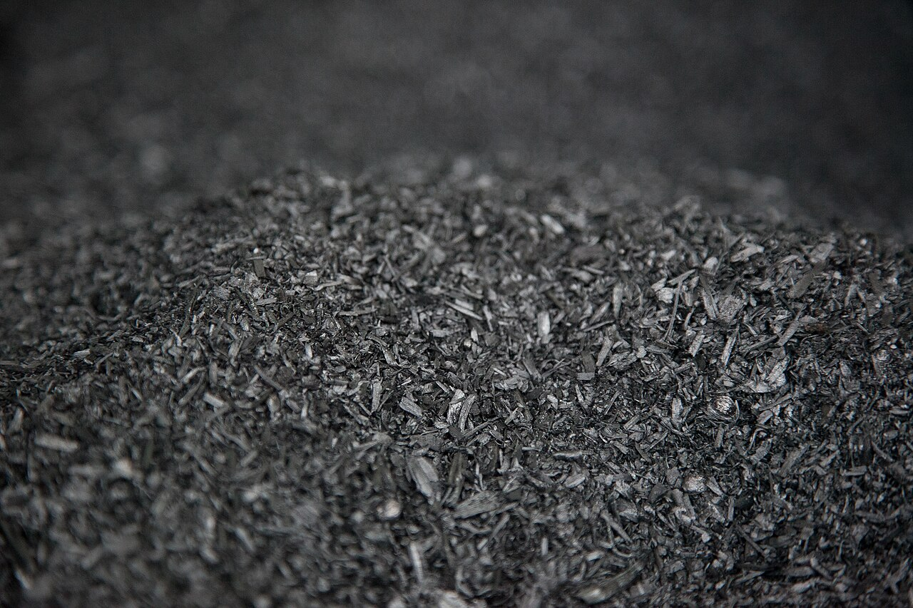

Biochar and carbon removal from regional wood waste and underutilized lumber.

Storr Carbon is an early-stage company based in Baltimore, Maryland. We are working to turn regional wood waste into biochar and, eventually, durable carbon removal credits. We’re currently talking with feedstock suppliers, processors, and partners.
What we’re exploring
- Sourcing wood residue from Maryland tree care, utility, and sawmill operations
- Partnering with existing biochar producers
- Building toward carbon removal credits through a recognized registry